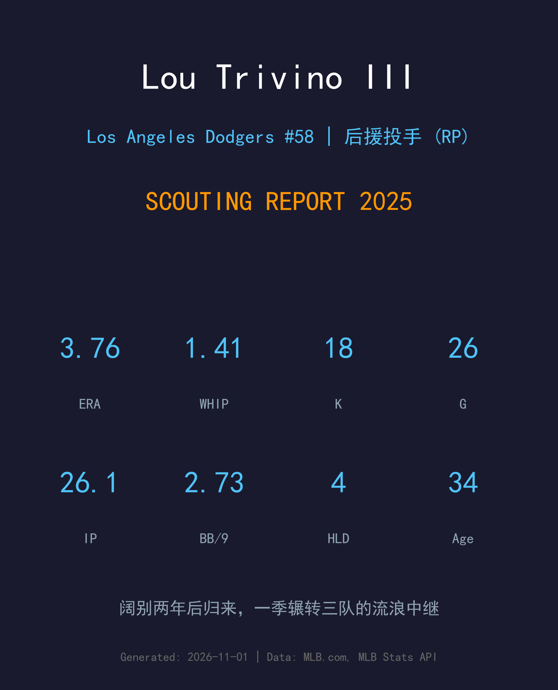
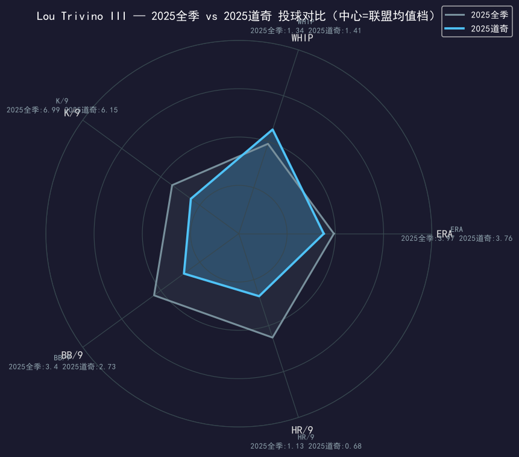
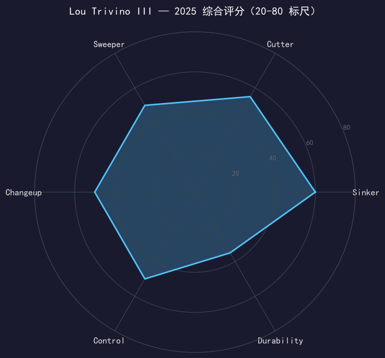

Los Angeles Dodgers #58 | 后援投手 | 右投 | 阔别两年后归来，一季辗转三队的流浪中继

Lou Trivino 的 2025 年是一部压缩版的职业生涯：开季在巨人投出 5.84 被释出，5 月 11 日与道奇签下小联盟合约，5 月 18 日升上大联盟，在洛杉矶交出 26 场、3.76 自责分率、1.41 WHIP 的中段好球——然后在 7 月 21 日被指定让渡、7 月 27 日释出；费城人在截止日后捡走他，他再用 10 场 2.00 为费城人的季后赛冲刺收尾。
这已是他连续两年缺席大联盟之后的回归赛季——2023 与 2024，他一场 MLB 都没投。能够从两年的空白里找回 95.2 mph 的伸卡和完整的五球种配球，本身就是一件值得记录的事；而全季 47 场、3.97 自责分率的答卷说明：他不是回来告别的，是回来继续投的。
从 2025 年 11 月的视角看，Trivino 是典型的「被低估的流浪老兵」：三支球队都试过了他，三支球队也都在某个时刻放弃了他的名单位置——但没有一支球队能否认他的投球内容。34 岁、健康、能吃一局以上的中继，他的下一份合约不会缺买家。
奥克兰时代的巅峰：71 场出赛、3.18 自责分率、22 次救援成功——那是他生涯第一次、也是至今唯一一次坐上终结者的位置，整季守住 44 场完投局。
8 月被交易到纽约扬基后投出 25 场 1.66 自责分率，成为扬基季后赛牛棚最可靠的一环——也是他受伤前最后的完整赛季。
连续缺席 2023、2024 两个完整赛季后，以 34 岁之龄回到大联盟，全年辗转巨人、道奇、费城人三队，合计 47 场 3.97——用一整个赛季证明「回来了」。
以下为道奇段数据（2025-05-18 自俄克拉荷马城升上、2025-07-27 被释出）：

| 阶段 | G | W-L | ERA | WHIP | IP | SO | BB | K/9 | BB/9 |
|---|---|---|---|---|---|---|---|---|---|
| 巨人（4-5月） | 11 | 0-0 | 5.84 | 1.70 | 12.1 | 11 | 10 | 8.01 | 7.29 |
| 道奇（5-7月） | 26 | 2-1 | 3.76 | 1.41 | 26.1 | 18 | 8 | 6.15 | 2.73 |
| 费城人（8-9月） | 10 | 1-1 | 2.00 | 1.00 | 9.0 | 8 | 0 | 8.00 | 0.00 |
三段曲线是一部清晰的「状态重建史」：巨人段他还在找比赛感觉（10 次保送挤进 12.1 局），道奇段保送砍到 2.73、ERA 压到 3.76，费城人段则进化到 9 局零保送、ERA 2.00 的完全体。道奇在他「找到一半」时放走了他——这是阵容数学的残酷，而非投球内容的否定。全季 47 场、从 5.84 走到 2.00，这条弧线本身比任何单季数据都更能说明他的回归成色。
2025 赛季真实配球数据（MLB Stats API pitchArsenal，全季三队汇总）：
使用率第一的当家球种，细小横移用来对付左打者、制造软弱击球——两年伤停后仍能稳定进垒，是他回归的支点。
95+ 的重伸卡是配球地基，沉球诱导滚地球、吃局数的效率工具。
大幅横移的右打者追杀球，两好球后的主要三振选项。
对付左打的关键武器，与伸卡形成速差落差；伤停后这颗球的质量维持得最好。
直上直下的抢好球球种，抬升打者视线为变化球铺垫。
零星使用的点缀球种，出其不意时偶尔一用。
Trivino 的 2025 最值得书写的不是任何一段单独的数据，而是三段之间的递进关系。巨人段（5.84、BB/9 7.29）是典型的「两年没比赛」投手：球速在、控球乱；道奇段（3.76、BB/9 2.73）是重建期：保送减半、配球找回秩序；费城人段（2.00、BB/9 0.00）则是完全体：9 局零保送意味着他每一颗球都知道要去哪。把这种曲线放进 34 岁的身体里，本身就反驳了「伤停两年即报废」的常识。
7 月 21 日道奇 DFA 他时，他的道奇段数据是 3.76/1.41——绝对够格留下。但牛棚名单只有那么多位置，当球队需要在年轻火球手和老将中继之间做选择时，34 岁、可下放的 Trivino 成了算术的牺牲品。值得注意的是费城人 8 月捡走他后立刻把他用进高杠杆（10 场 7 次收尾登板），这是对「投球内容」最直接的背书。
唯一的隐忧写在耐久性一栏：连续两年整季报销的经历让任何球队都不敢给他多年承诺，而 34 岁的身体恢复速度也无法与 28 岁相比。但 2025 年 47 场的出赛量已经是他 2022 年以来最多的一次——如果 2026 年能把这个数字推到 55-60，「流浪中继」这个标签就有机会换成「稳定中段」。他的球种库（五颗以上可用球种）正是能吃大量局数的类型。

五球种流浪老兵，耐久性是最后的问号
C+~B- 级 / 中段中继（耐久变量）
道奇 2025 季后赛夺冠之路：外卡 2-0 红人 → NLDS 3-1 费城人 → NLCS 4-0 酿酒人 → 世界大赛 4-3 多伦多蓝鸟。
Trivino 没有出现在道奇的季后赛名单里——7 月 27 日他已披上费城人球衣。而命运开了一个小小的玩笑：道奇在 NLDS 淘汰的正是费城人，他在老东家夺冠的路上投完了自己赛季的最后九局（自责分率 2.00）。
Trivino 的 2026 年大概率仍是一份「低风险、高上限」的短约：球队为五球种经验和终结者履历付钱，他为自己争取第二个完整健康季。如果能把出赛数推到 55-60 场并保持费城人段的控球水平，他将从「流浪者」变回「可靠的中段」。
理想剧本：春训锁定开季名单，成为某队第六七局的固定选项
现实基准：小联盟合约起步，年中像 2025 一样被需要他的球队捞起
上行惊喜：复制 2021 年轨迹，重回终结者讨论
Lou Trivino 来自宾夕法尼亚州的格林莱恩——一个人口不到千人的小镇，他是那里走出的第一位大联盟球员。2018 年他在奥克兰运动家登上大联盟，次年便成为球队牛棚的固定班底；2021 年，他迎来了生涯的巅峰年：71 场、3.18 自责分率、22 次救援成功，坐稳运动家终结者的位置。
2022 年 8 月，他被交易到纽约扬基，投出 25 场 1.66 的精彩后援表现——那也是他受伤前最后的完整赛季。此后是漫长的两年空白：2023 与 2024，他一场 MLB 都没投。对大多数投手来说，这就是终点；但对 Trivino 来说，那只是中场休息。
2025 年，他用一条「5.84 → 3.76 → 2.00」的曲线完成了体育界最艰难的回归之一，辗转巨人、道奇、费城人三队投出 47 场。2025 年 11 月的 Lou Trivino 仍然是一名流浪中继——但这一次，是他自己选择要继续走下去。